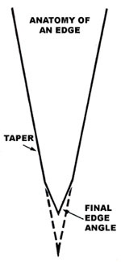

Staff Photo
[1] LEFT TO RIGHT: Soft Arkansas stone . . . Buck sharpening steel . . . .Smith hard. Arkansas stone ... Gerber sharpening steel. BELOW, DESCENDING: .Sharpening steel for stainless . . . sharpening steel for high-carbon . . . ceramics stick. [2] MOTHER's belt sander/sharpener [3] The taper is filed onto a kitchen knife with a fine-toothed instrument (note hand guard on file). Ord v one stroke ix made per .vide before turning flit blade over [4] The tatter is smoothed on the wood-backed portion of the belt. [5] Blue coloration?which shows where the edge has been ground?is applied with a felt-tip marker. [6] The edge is worked into the blade against flit center of the bell, with a gloved finger beneath. When there's no reflection from the edge, it's sharp. [7] A polished finish is achieved by stroking the already sharp blade against a ceramic stick. [8] A screwdriver that has been hollow(against the rounded form of a caster) is able fit grip a fastener much more securely